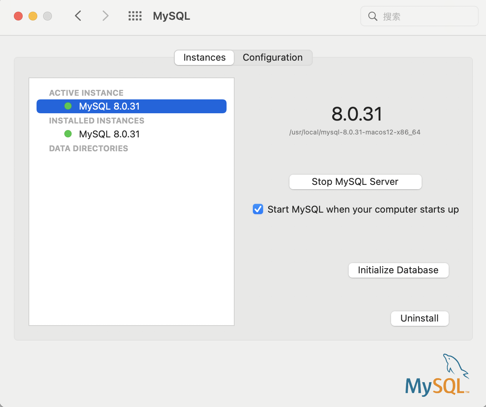
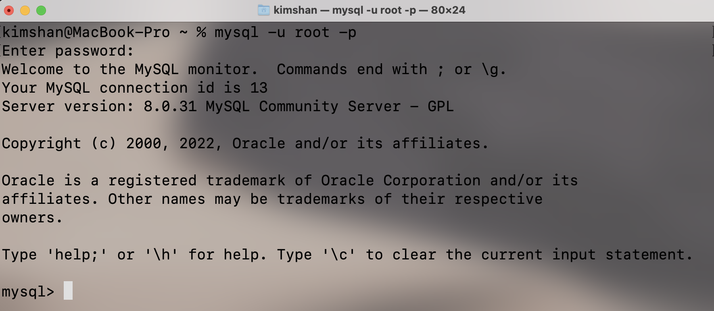
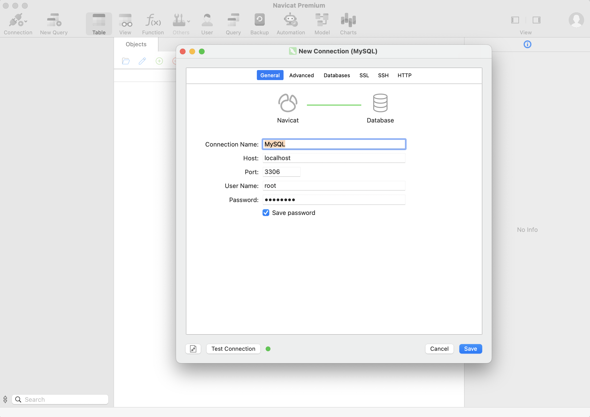
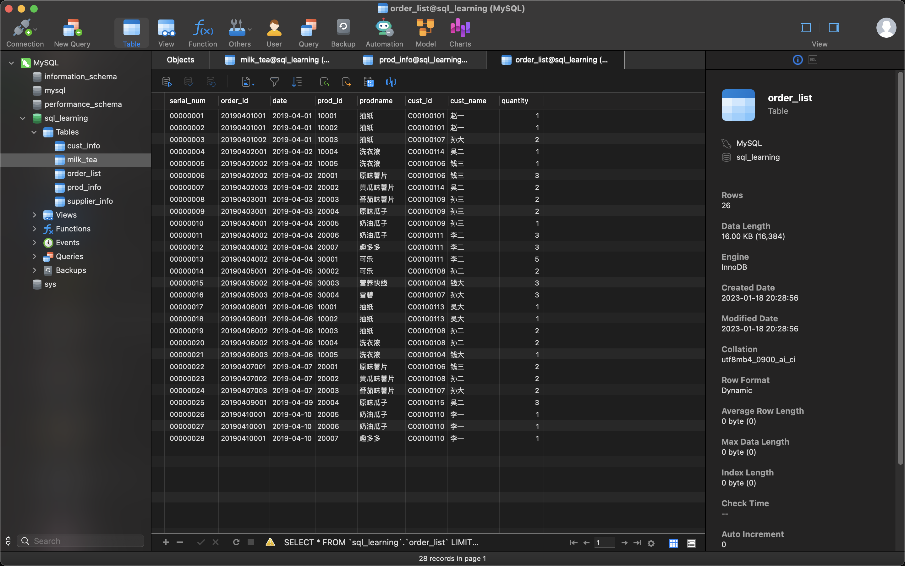

2023.01.18
SQL入门训练营课程
MySQL
Navicat
运行环境：MacOS 12.6，i5
安装MySQL：系统偏好设置 -> MySQL

教程。配置命令行：在.zshrc里边加入export PATH=${PATH}:/usr/local/mysql/bin，命令行输入mysql -u root -p后输入密码可以登录

使用Navicat连接MySQL，选择新建链接，选择MySQL，填入密码，发现可以自动连接

在Navicat选择excel文件导入后的结果
